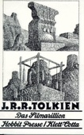
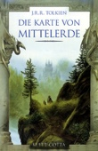

Bookpedia : Bibliothek : Autor : T


| # | Autor | Serie | Titel | Format | Seiten | Erscheinungsdatum | Verlag | Genre |
|---|---|---|---|---|---|---|---|---|
| 180 | Fiore Tartaglia | Shotokan-Kata bis zum Schwarzgurt/Band 1: Das Nachschlagewerk für Karate-Kata der Shotokan-Stilrichtung | Gebundene Ausgabe | 112 | Mai 2017 | spectra | Sport allgemein | |

Shotokan-Kata bis zum Schwarzgurt/Band 1: Das Nachschlagewerk für Karate-Kata der Shotokan-Stilrichtung Fiore TartagliaHinzugefügt am: 04.11.2018 Zusammenfassung: Wer hat folgende Situation noch nicht erlebt? Man lernt eine Kata, übt sie einige Male und dann längere Zeit nicht mehr. So passiert es immer wieder, dass mitten in der Kata Unsicherheiten auftreten und der Übende nicht mehr weiß, wie es weitergeht. "Wenn ich die Möglichkeit hätte, irgendwo nachzuschauen, dann würde ich den Ablauf bald wieder beherrschen." Dieses Buch soll nichts anderes sein, als genau jenes gewünschte Nachschlagewerk. - Eine weitere Farbe (Rot) zur besseren Verständlichkeit und klareren Darstellung - 115 Zusätzliche Detailzeichnungen - Vier zusätzliche Seiten im Inhalt - Alle bereits vorhandenen über 1.700 Zeichnungen grafisch überarbeitet und modernisiert - Über 300 kleine Korrekturen oder deutlichere Darstellungen an vorhandenen Grafiken ausgeführt - Darstellung aller Techniken mit drei Zwischenbewegungen - Übersichtliche und detailgenaue Zeichnungen mit allen Einzelheiten - Zusätzliche Zusammenstellung aller Kata "auf einen Blick" - Ergänzende Text-Erklärungen bei schwierigen Passagen - Erläuterung der japanischen Begriffe unter Zuhilfenahme von Zeichnungen - Handliches Format und robuste Ausführung für die Sporttasche Inhalt: Taikyoku shodan, Heian shodan, Heian nidan, Heian sandan, Heian yondan, Heian godan, Tekki shodan, Bassai dai, Jion, Kankû dai, Empi, Hangetsu.
Themen
|
||||||||
| 181 | Fiore Tartaglia | Shôtôkan-Kata, Bd 3: Bunkai der Shôtôkan-Kata bis zum Schwarzgurt, Ausgabe AT+CH | Taschenbuch | 128 | Spectra | Sport allgemein | ||
Shôtôkan-Kata, Bd 3: Bunkai der Shôtôkan-Kata bis zum Schwarzgurt, Ausgabe AT+CH Fiore Tartaglia
ISBN: 9783980908160 Ausgabe: 4. Aufgale Hinzugefügt am: 04.11.2018 Zusammenfassung:
Themen
|
||||||||
| 182 | John R. R. Tolkien | Das Silmarillion | Gebundene Ausgabe | 404 | Nov. 1996 | Klett-Cotta | Fantasy | |

Das Silmarillion John R. R. Tolkien

ISBN: 9783608951318 ListPrice: EUR 25,46 Ausgabe: 12th Maße: 1.18 x 8.58 x 5.67 in Übersetzer: Wolfgan Krege Wertung: 4.5 (198 Stimmen) Hinzugefügt am: 09.11.2008 Zusammenfassung: Das Buch ist brillant!
Themen
|
||||||||
| 183 | John R. R. Tolkien | Die Geschichte des Großen Ringkrieges. 7 Bände. Der Hobbit / Der Herr der Ringe | Gebundene Ausgabe | 1500 | Nov. 1997 | Klett-Cotta | Fantasy | |

Die Geschichte des Großen Ringkrieges. 7 Bände. Der Hobbit / Der Herr der Ringe John R. R. TolkienWertung: 4.0 (5 Stimmen) Hinzugefügt am: 09.11.2008 Zusammenfassung: Es handelt sich bei dieser Ausgabe um einen schönen Schuber mit 7 Büchern, die die gesamte Geschichte des Herrn der Ringe wiedergibt. Die Vorgeschichte "der Hobbit" ist ein Buch, die 6 weiteren Bücher enthalten den Inhalt der drei Teile von "der Herr der Ringe".
Themen
|
||||||||
| 184 | John R. R. Tolkien | Die Karte von Wilderland | Taschenbuch | 22 | Nov. 1996 | Klett-Cotta | Fantasy | |

Die Karte von Wilderland John R. R. TolkienWertung: 3.0 (4 Stimmen) Hinzugefügt am: 09.11.2008 Zusammenfassung: Die Karte von Wilderland ist ein recht netter Begleiter zum Erfolgsroman von J.R.R. Tolkien: Der kleine Hobbit.
Themen
Belletristik, Fantasy, HC/Belletristik/Fantasy, Science Fiction, Der kleine Hobbit (Tolkien), Science Fiction/Fantasy, Tolkien, John R. R., Englische Belletristik, Roman, Erzählung, Tolkien, John Ronald Reuel |
||||||||
| 185 | John R. R. Tolkien, Ulrike Killer | Das Tolkien Lesebuch. | Broschiert | 441 | Nov. 1991 | Dtv | Schule, Unterricht & Lernhilfen | |
Das Tolkien Lesebuch. John R. R. Tolkien, Ulrike KillerWertung: 2.0 (1 Stimmen) Hinzugefügt am: 09.11.2008 Zusammenfassung: Nicht erst seit der Verfilmung ist das Romanwerk J.R.R. Tolkiens -- "Der Hobbit" und "Der Herr der Ringe" -- zu einem kulturellen Phänomen von überragender Breitenwirkung geworden. Tolkiens ganzes Leben war der Schöpfung jener fiktiven Welt gewidmet, die mit ihren Völkern, ihren Mythen und ihrer breit angelegten Historie den Boden für die Abenteuer der Hobbits bereitet. Die Tiefe dieser Welt erschließt sich aber erst, wenn man die vielen zum Teil fragmentarischen Aufzeichnungen studiert, die ausschließlich nach Tolkiens Tod herausgegeben wurden.
Themen
|
||||||||
| 186 | John R. R. Tolkien, Brian Sibley | Die Karte von Mittelerde | Taschenbuch | 20 | Nov. 2002 | Klett-Cotta | Fantasy | |
Die Karte von Mittelerde John R. R. Tolkien, Brian Sibley

ISBN: 9783608933789 ListPrice: EUR 11,50 Ausgabe: 4., Aufl. Illustrator: John Howe Maße: 0.47 x 7.95 x 5.28 in Wertung: 3.5 (15 Stimmen) Hinzugefügt am: 09.11.2008 Zusammenfassung: Auch wenn der Preis für diese Karte ein wenig übertrieben scheint, so kann ich sie dennoch uneingeschränkt zum Kauf empfehlen! Es ist richtig, daß die Landkarte an sich nur etwa 40 x 32 cm groß ist - die Gesamtgröße des Posters beträgt allerdings ganze 72 x 73 cm! Die Karte (es ist diejenige, die auch immer den "Herr der Ringe"-Büchern beiliegt - hier allerdings in Farbe und um einige Ortschaften ergänzt) ist umrahmt von wunderschönen Ornamenten und Gemälden von John Howe, der auch als künstlerischer Berater zum "Herr der Ringe"-Film hinzugezogen wurde. Ich persönlich war so begeistert, daß ich mir die beiden anderen Karten (von Wilderland und Beleriand) auch noch besorgt habe. Die drei Karten nebeneinander sehen als Wandschmuck einfach traumhaft aus.
Themen
Belletristik, Fantasy, HC/Belletristik/Fantasy, Science Fiction, Der Herr der Ringe (Tolkien), Science Fiction/Fantasy, Tolkien, John R. R., Englische Belletristik, Roman, Erzählung, Tolkien, John Ronald Reuel |
||||||||

 Updated: 06.06.2022 | Total number of titles: 196 | Page: 16 of 17
Updated: 06.06.2022 | Total number of titles: 196 | Page: 16 of 17